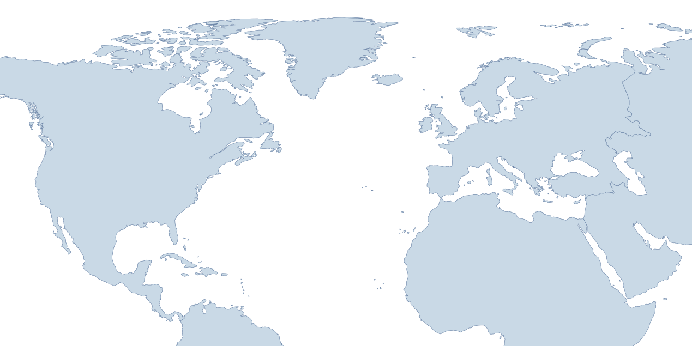
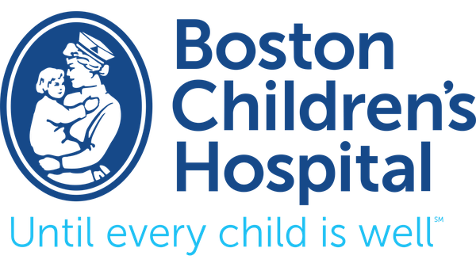
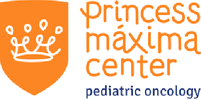

IMPACT Consortium
Immune & Microbiota Monitoring Partnership for Cellular Therapy in Children
IMPACT brings together pediatric transplant and cellular therapy programs across North America and Europe to harmonize immune monitoring, microbiome profiling, and clinical data integration.

Memorial Sloan Kettering Cancer Center New York, United States
Boston Children’s Hospital Boston, United States Stanford University Palo Alto, United States St. Jude Children’s Research Hospital Memphis, United States Ospedale Pediatrico Bambino Gesù Rome, Italy
Princess Máxima Center Utrecht, NetherlandsUnited States — Center for harmonized immune monitoring and multi-omics integration.
United States — International leader in pediatric HCT science and clinical innovation.
United States — Expertise in immune reconstitution modeling and computational pipelines.
United States — Pioneering pediatric cellular therapy and precision immunology.
Italy — Europe’s leader in pediatric HCT, immunology, and mechanistic studies.
Netherlands — National center of excellence for pediatric cancer research and trials.